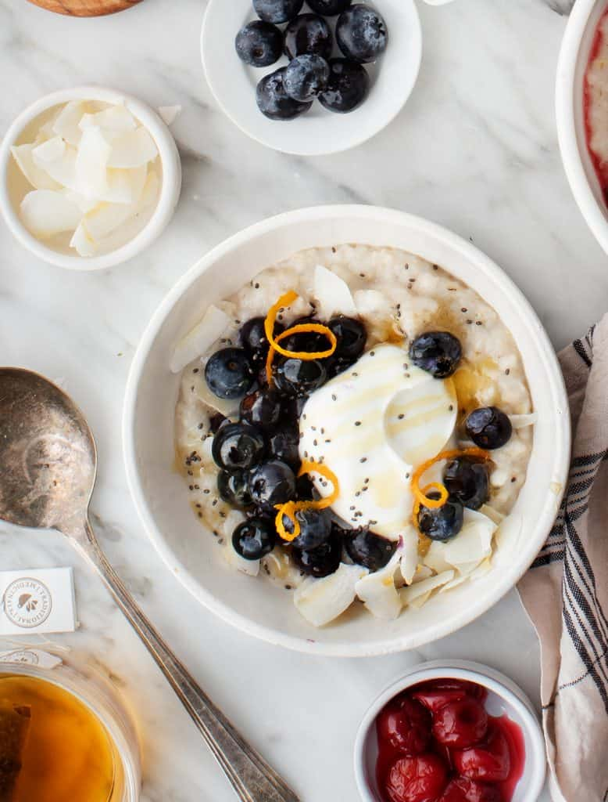
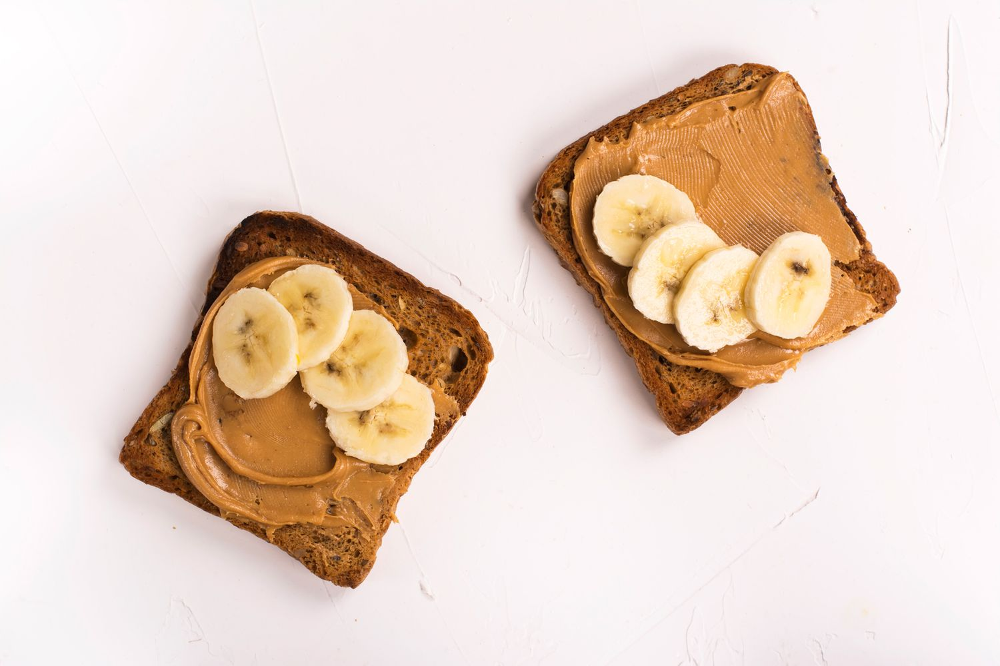

Oatmeal

Yields
1 serving(s)
Cal/Serv.
129
Benefits
- Low in calorie
- Contains good fats
- Good amount of protein
Whole Grain Toast

Yields
1 serving(s)
Cal/Serv.
210
Benefits
- Source of Protein
- Low in calorie
- Veggies provides fiber
Nuts

Yields
1 serving(s)
Cal/Serv.
280
Benefits
- Source of healthy fats
- Good in carbs
- Good source of protein